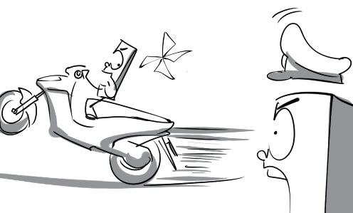
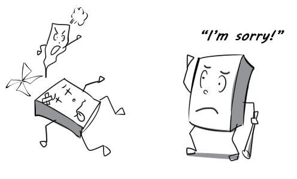

01.
action: I will take legal action against you if you don't give me back my money.
02.
arson: Peter carried out an arson attack on his enemy's house to take revenge on him.

03.
authority: The king has authority over all the people in his kingdom.

04.
burglary: The young man has been arrested for burglary.

05.
duress: His confession was made under duress.

06.
convict: The convict was required to perform community services while serving a sentence.
07.
crime: Bank robbery is the crime of stealing money from a bank.

08.
parole: Peter was released on parole thanks to his really good behaviour in prison.

09.
fine: You have to pay $100 in fines if you park in the wrong place.
10.
fraud: He pretends to be the CEO's assistant to commit fraud.
11.
imprisonment: Mr Thomas was sentenced to life imprisonment for murdering his wife.
12.
inequality: There are major inequalities of opportunity in the recruitment.

13.
intent: Andrew puts poison in his boss' coffee with intent to murder him.

14.
judge: The judge asked everyone to keep silent so that he could announce the final decision.

15.
jury: The jury paid full attention to the trial proceedings.

16.
kidnapping: There have been some kidnappings of children from schools recently.
17.
lawyer: The lawyer is presenting evidence to prove that the defendant was innocent.

18.
motive: Ransom is a common motive of kidnapping.

19.
murder: The police are investigating a case of murder.

20.
offence: The police officer pulled Peter over because of his traffic offence.
21.
pickpocketing: The thief bumped into the victim purposely to commit pickpocketing.

22.
prevention: The barbed wire serves as a method of prison escape prevention.
23.
prison: This man was sentenced to 25 years in prison for killing his friend.

24.
crime rate: The police are trying their best to reduce the crime rate.

25.
property crime: David is charged for property crime because he stole a car.

26.
prosecutor: The prosecutor is arguing that the defendant is guilty of the murder.
27.
protection: The witness was put under police protection.

28.
punishment: Mary asked her son to write 100 times "I will not skip school." as a punishment.

29.
recklessness: His recklessness in riding his motorcycle will kill him some day.

30.
smuggling: Peter was arrested at the airport for tobacco smuggling.

31.
social system: The social system of Vietnam has changed dramatically.

32.
swearing: They always use swearing when they have an argument.

33.
trial: Andrew is on trial for drug smuggling.
34.
the accused: The accused insists that he is innocent before the court.

35.
toxic waste: This factory discharges toxic waste into the river.

36.
vandalism: They usually commit an act of vandalism when they are angry.
37.
victim: Peter was the innocent victim of a violent clash.

38.
drug-related: The police concluded that his death is drug-related.

39.
evil: The evil man tried to attack me with a baseball bat.
40.
guilty: The judge announced that the defendant was guilty of the offence.

41.
harsh: The bakery owner is verbally attacking the poor boy with harsh criticism.

42.
innocent: The judge announced that the defendant was innocent and released him immediately.
43.
law-abiding: Peter is such a law-abiding citizen. He never violates any laws.
44.
non-violent: They used lawful and non-violent forms of protest to express their opinion.

45.
petty: The young boy was arrested for committing a petty crime.
46.
random: The surveyor grabs a random pedestrian and asks him a few questions.
47.
strict: The school rules are so strict that many students cannot stand them.

48.
unintentional: I gave Mary an unintentional push when I walked by her.
49.
victimless: Individual purchase of drugs is a victimless crime.
50.
break into: I hit the intruder on the head when he was trying to break into my house.

51.
abide by: All the soldier have to abide by the rules of the army.

52.
abolish: The school board decided to abolish the unreasonable rule this morning.

53.
arrest: Eventually, the police succeed in arresting the dangerous criminal.

54.
deter: You should lock your bicycle to deter people from stealing it.

55.
enforce: The police enforced speed limits on the roads to reduce the number of accidents.
56.
monitor: The CIA are monitoring the suspect's activities everyday.
57.
obedience: The government demands obedience to traffic laws from its citizens.
58.
perpetrate: David perpetrated assault against a man when he was drunk.

59.
prove: Andy is trying to prove that he is not the one who broke the windows.

60.
resent: The public resents the accused because he is such a cold-blooded murderer.

61.
respect: My father taught me to respect the traffic laws.

62.
appeal: The defendant wants to appeal against his death sentence.

63.
accuse: My teammates accused me of the team's failure in the competition.

64.
felony: Bank robbery with dangerous weapons is considered a felony.

65.
violate: You violated the rules when you stepped on the grass.

66.
attention-grabbing: The new iPhone is the most attention-grabbing product at the technology fair.
67.
celebrity: The celebrity is giving her fans autographs.

68.
controversial: The existence of mermaids is a highly controversial topic.

69.
distorted: The article provided distorted information about the actress.

70.
entertaining: The audience found the juggling performance very entertaining.

71.
informative: Peter found the article about energy saving very informative.

72.
intrusive: The actress is irritated by the journalist's intrusive question.

73.
mainstream: Many celebrities wear mainstream fashion while the others such as Lady Gaga love bizarre clothes.
74.
pervasive: The stressful mood is pervasive in our office.

75.
realistic: Being realistic, Daisy would rather marry an ugly but rich man than a handsome but poor one.
76.
sensationalist: There is a sensationalist headline on the magazine cover today.

77.
superficial: The celebrity lives a superficial life. We can never understand how he really feel.

78.
unbiased: The judges are expected to be completely unbiased.

79.
well-informed: My brother is very well-informed about this singer. He will give you any information you want.

80.
affect: Her life is severely affected by those cruel rumours.

81.
broadcast: The World Cup final is being broadcast on TV right now.

82.
control: The singer's life is controlled by her manager. She can't make her own decision.

83.
exploit: Her youth and talent are being exploited by her manager.

84.
invade: Her privacy is invaded by the press.

85.
report: The TV news reported that there was a fatal truck accident on Highway 99.

86.
review: The new movie is reviewed favourably on the newspaper.

87.
verify: Peter asked his girlfriend to verify his alibi.

88.
advertisement: My children like to watch advertisements on TV because they are very funny.

89.
column: I like to read the gossip column on this newspaper.

90.
press conference: The rocker held a press conference in Los Angeles to introduce his new album.

91.
libel: The politician was very angry when he read the libel about him on the newspaper.

92.
tabloid: Don’t read this terrible tabloid. They always report distorted stories.

93.
prime time: In Vietnam, the news is broadcast during prime time.

94.
headline: The headlines are usually decorated expressively to attract readers' attention.
95.
broadsheet: Nhan Dan is one of the most popular broadsheets in Vietnam.

96.
reality TV: Many people take part in reality TV to become famous.